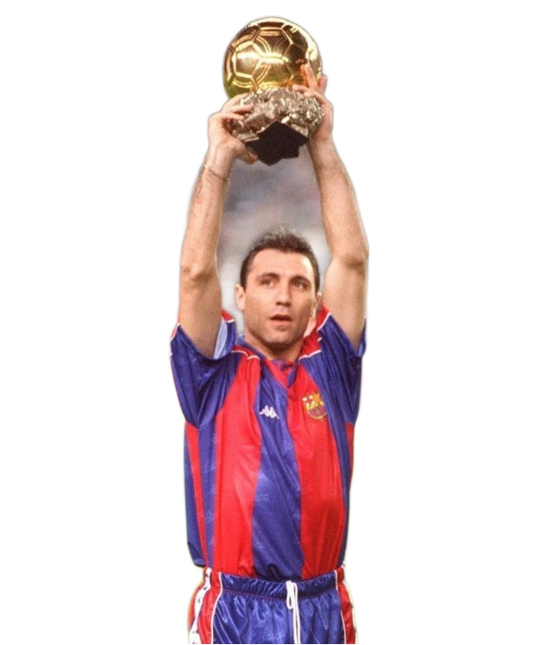
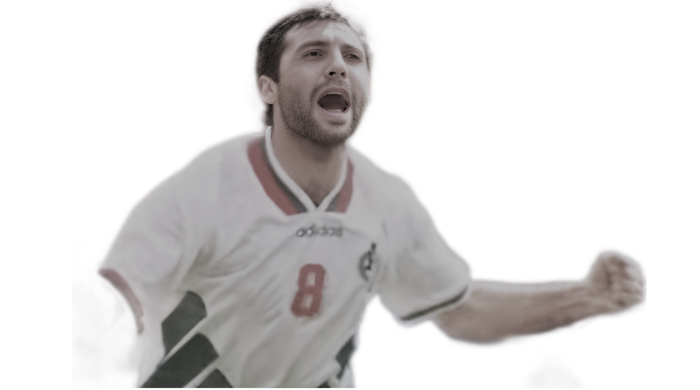
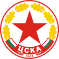
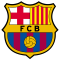
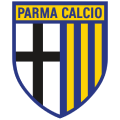
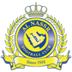
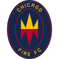
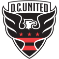
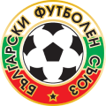

HRISTO
STOICHKOV
menu
close
Състезателна кариера
Треньорска кариера
Постижения
Статистики
Контакти
Индивидуални постижения
 
"Златна топка" за футболист №1
"Златен Онз"
5 пъти футболист №1 на България
1 път спортист №1 на България
2 пъти голмайстор №1 на българското първенство
Голмайстор на сезона в КНК
Носител на "Златната обувка" за голмайстор №1 в Европа
Носител на "Златната обувка" за голмайстор на световното първенство
1 път избран в Идеалния отбор на световно първенство
1 път избран в Идеалния отбор на европейско първенство
Избран сред стоте най-велики футболисти на ФИФА и Пеле
"Златен крак" за принос към футбола
Избран за най-великия български футболист на втората половина на ХХ век от УЕФА
Избран за най-добър футболист на сезона в Примера дивисион от "Дон Балон"
Избран за най-добър футболист на сезон 1991/1992 от УНИЦЕФ
Клубни постижения

ЦСКА
3 пъти шампион
4 пъти носител на купата
1 носител на суперкупата
2 пъти голмайстор на България
164 мача
103 гола
1 път носител на КНК

Барселона
5 пъти шампион
1 път носител на купата
3 пъти носител на суперкупата
1 път носител на КЕШ
1 път носител на КНК
215 мача
108 гола

Парма
30 мача
7 гола
1 път носител на купата
3 пъти носител на суперкупата
1 път носител на КЕШ
1 път носител на КНК
215 мача

Ал Насър
Носител на азиатската КНК
2 мача
1 гол
1 път носител на купата
3 пъти носител на суперкупата
1 път носител на КЕШ
1 път носител на КНК
Кашива Рейсол
28 мача
13 гола
1 път носител на купата на Япония
3 пъти носител на суперкупата
1 път носител на КЕШ
1 път носител на КНК

Чикаго Файър
51 мача
28 гола
1 път носител на купатата на Америка
3 пъти носител на суперкупата
1 път носител на КЕШ
1 път носител на КНК

Ди Си Юнайтед
21 мача
5 гола
1 път носител на купата
3 пъти носител на суперкупата
1 път носител на КЕШ
1 път носител на КНК

Национален отбор на България
Бронзов медал от Мондиал 1994
83 мача
37 гола
1 път носител на купата
3 пъти носител на суперкупата
1 път носител на КЕШ
arrow_upward